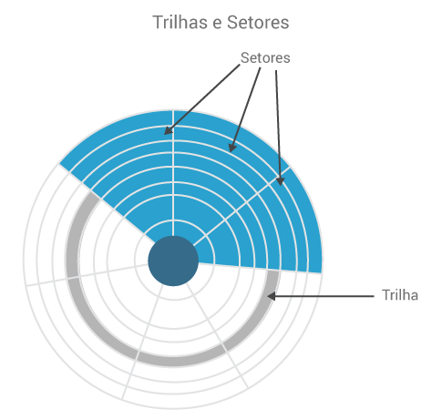
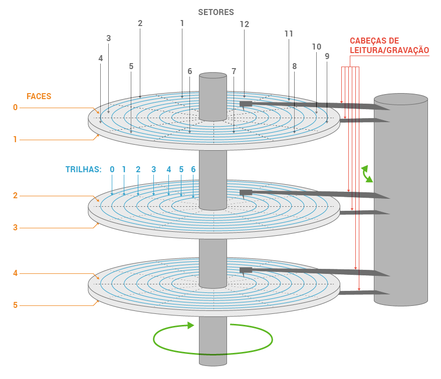

É chamado de armazenamento secundário os armazenamentos de dados que são feitos em locais diferentes da memória principal (armazenamento primário), ou seja, são os armazenamentos em disco rígido ou hard disk (HD), CD-ROM, floppy disks, memórias flash, fita, cartuchos, pendrives, etc. Desde os primeiros computadores, os HD se mostraram os mais potentes meios de armazenamento de dados e sua eficiência permanence até os dias de hoje. Suas vantagens frente aos demais se dão devido:
Capacidade de armazenamento: muito grande e não para de crescer;
Velocidade de gravação e recuperação dos dados: só mais lenta que a velocidade da memória RAM.
No início, as cabeças de leitura dos HD encostavam neles, era necessário para que os dispositivos eletrônicos antigos pudessem ler os campos magnéticos. Com o avanço da eletrônica, atualmente, as cabeças de leitura “flutuam”, quanto mais próximas as cabeças de leitura ficam do disco, melhor. Organização:
HD: conjunto de ‘pratos’ empilhados;
Dados são gravados desses pratos;
Superfícies: são organizadas em trilhas;
Trilhas: são organizadas em setores;
Cilindro: conjunto de trilhas na mesma posição.

Organização das Trilhas e Setores no HD

Organização das Trilhas e Setores no HD com as Cabeças de Leitura/Gravação
O armazenamento secundário armazena grande quantidade de dados permanentes a um baixo custo quando comparado ao custo da memória RAM, porém acessar dados em um disco rígido é mais vagaroso que na memória principal:
Movimento mecânico do cabeçote de leitura/gravação;
Latência rotacional;
Tempo de transferência.
O armazenamento secundário removível facilita o backup e a tranferência de dados:
HD externo;
CD;
DVD;
Disco Zip;
Cartão de memória Flash;
Fita;
Cartucho;
Pendrive, etc.
1. Gerenciamento do Armazenamento Secundário
Os SO (Sistemas Operacionais) variam na forma com que gerenciam os dados armazenados pois, a maioria possui seu próprio sistema de arquivos. Em geral, há sempre uma estrutura hierárquica de arquivos, ramificada, em árvore ou plana:
Mainframe: arquivos gerados dentro de catálogos;
Servidores e PC: arquivos gerados dentro de diretórios.
Segue uma descrição das operações em arquivos encontradas na maioria dos sistemas de arquivo:
Criação: geração do arquivo;
Abertura: abertura do arquivo, para colocar na memória os atributos e a lista de endereços para tornar as operações posteriores mais rápidas;
Fechamento: remover as referências dos arquivos da memória principal;
Leitura: abertura do arquivo para leitura do seu conteúdo;
Atualização: processo de atualização ou inserção de dados no arquivo;
Concatenação: união sequencial de arquivos, ou seja, trata-se de adicionar dados no final do arquivo;
Busca: pesquisa dentro do arquivo;
Ver atributos: permite a visualização das características do arquivo, como: permissões, localização, etc;
Definir atributos: define ou altera os atributos de certos arquivos;
Renomeação: troca do nome do arquivo;
Destruição: eliminação, remoção do arquivo para liberação do espaço.
Em alguns sistemas de arquivos, os nomes de arquivos são estruturados, com sintaxes especiais para extensão de arquivos e números de versão. Em outros, os nomes de arquivos são simplesmente correntes de texto. A localização precisa de um arquivo no HD, que é chamada de "rota" ou "caminho" (path em inglês). A rota é determinada por uma sucessão de nomes de catálogos e arquivos (Mainframes) e de diretórios e subdiretórios, ordenados hierarquicamente da esquerda para a direita (Servidores e PC).
São responsabilidades do SO:
Gerenciamento de espaço livre: o SO controla a quantidade de bytes que tem disponível no HD (ou HDs) a fim de permitir (ou não) a criação ou atualização de arquivos;
Alocação de armazenamento: o SO possui as informações da localização de cada arquivo gerado e armazenado, possui todas as informações necessárias para o controle de cada arquivo;
Escalonamento de disco: ordenação e seleção das operações para a utilização dos discos;
Ferramentas de apoio: o SO disponibiliza ferramentas como Backup (cópia de segurança de arquivos) e Restore (restauração de arquivos);
Segurança: controla as permissões de usuários para a manipulação e entrada de comandos.
IMPORTANTE:
“A importância de um dispositivo se mede pelo impacto de sua perda”, essa frase resume bem a importância do armazenamento secundário num computador.